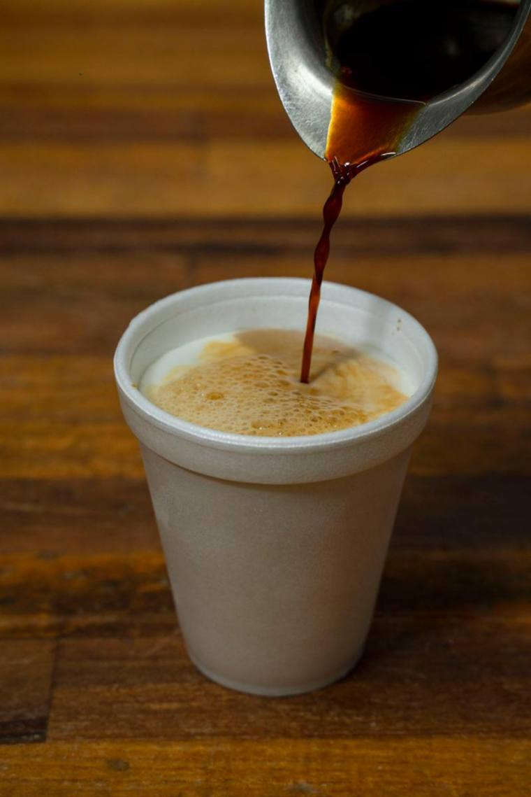

DrinksBebidas
Café con Leche
Rich and smooth coffee with milk. Available in small, medium, large. Choose strength, milk type, sugar level, foam style, and optional syrup or honey add-ons.Café con leche, suave y cremoso. En tamaño pequeño, mediano o grande. Elige la fuerza, el tipo de leche, el azúcar, la espuma y, si quieres, sirope o miel.